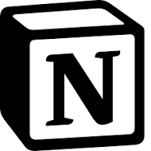
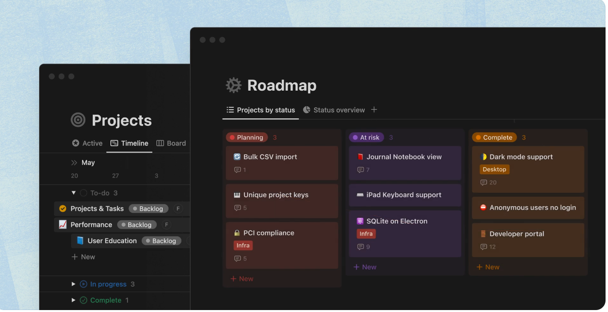
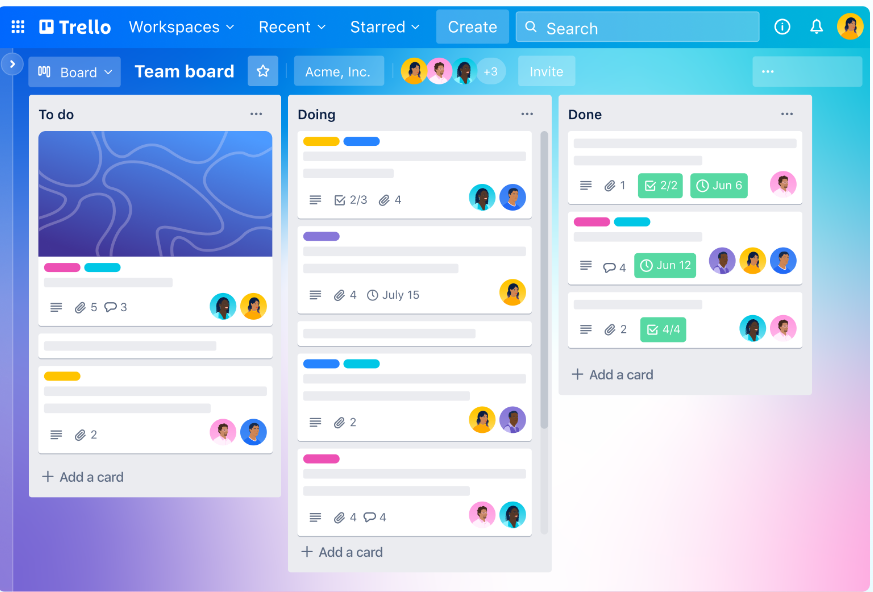

Upper-CASE vahendid toetavad analüüsi ja projekteerimist. Peamiselt on nad kasutusel kasutajanõuete analüüsimisel ja dokumenteerimisel. Nad on ennekõike mõeldud visualiseerimiseks, erinevate skeemide koostamiseks ja ka dokumentatsiooni genereerimiseks. Nad toetavad traditsiooniliste diagrammikeelte kasutamist
trello, canva, word, github
Isiklikult olen kasutanud näiteks Powerpointi ja Wordi
Notion ja Trello, molemad tootavad sarnasel pohimottel, kuid kasutamine on
erinev. Nimelt Trello on nagu Kanban tööriist, mis kasutab tahvleid ja
kaarte, et ülesandeid visuaalselt manageerida.
Notion on rohkem mitmekülgsem ja paindlikum, kuna läbi Notioni saab
isikupärastada töövooge ja projekte.
| Notion   |
| Trello  |